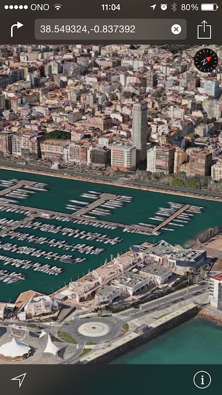
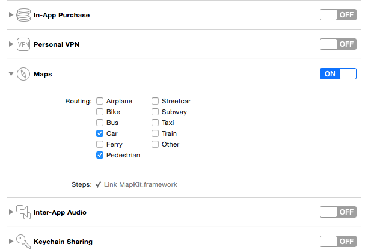
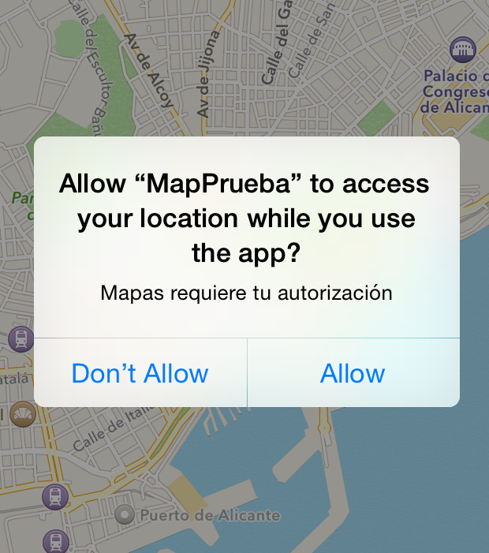
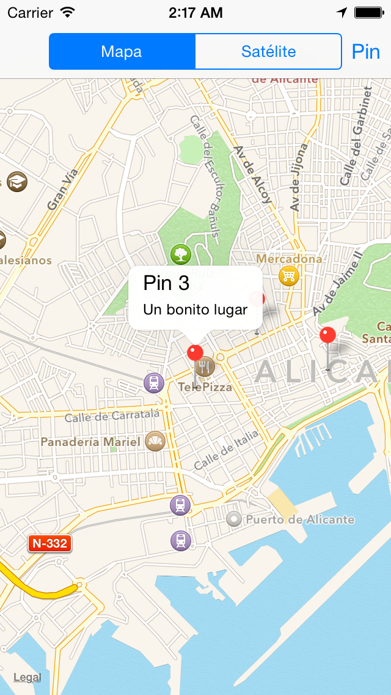
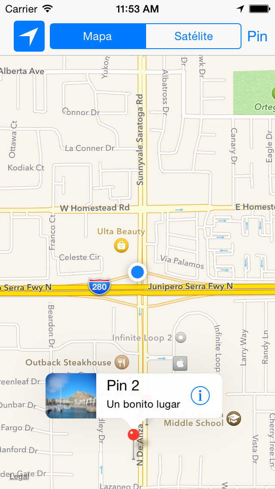

Sesión 4:
Mapas y
localización
Servicios de las plataformas móviles - iOS
Domingo Gallardo - domingo.gallardo@ua.es
Departamento Ciencia de la Computación e Inteligencia Artificial
Master Programación de Dispositivos Móviles
2017-18
Aspectos básicos de MapKit
- Map Kit
es el framework de Apple para trabajar con mapas.
- Permite muchas funcionalidades: pan y zoom, anotaciones,
localización, overlays, búsquedas, rutas, direcciones, ...
- Junto con los servicios de localización proporciona la forma de
incluir datos geográficos en nuestras apps.


Aspectos básicos de MapKit

- Los mapas permiten a los usuarios a visualizar datos geográficos de
una forma fácil de entender.
- Por ejemplo, un mapa puede mostrar datos de satélite de un área, o
una visualización tridimensional de una perspectiva de la zona.
- El framework Map Kit permite embeber en tu app un map completamente
funcional, que soporta funcionalidades similares a la de la app
Mapas.
- Con Map Kit puedes incorporar en tu app vistas de un punto
geográfico concreto.
- Además, el framework te permite añadir capas de información sobre el
mapa, moverlo, o tomar instantáneas de un mapa para imprimir.
Geometría de los mapas

- Map Kit usa una proyección Mercator, que es un tipo específico de
proyección cilíndrica.
- Una coordenada se define por una latitud y una longitud.
- La latitud es la distancia angular (en grados: de -90.0 a
90.0) desde el punto de la superficie hasta el ecuador. Las
latitudes positivas definen puntos por encima del ecuador y las
negativas por debajo.
- La longitud es la distancia angular (en grados: de -180.0 a
180.0) desde el punto de la superficie hasta el meridiano 0
(meridianto de Greenwich). Las longitudes positivas definen puntos
al este del meridiano y las negativas al oeste.
- La estructura
CLLocationCoordinate2D
representa esta estructura. Por ejemplo, para crear una localización
situada en Alicante:
| let alicanteLocation = CLLocationCoordinate2D(latitude: 38.3453,
longitude: -0.4831)
|
Otros puntos

- Un punto en el mapa se define por los valores
x e y en la
proyección de Mercator. Se define utilizando la estructura
MKMapPoint. Se
utiliza para especificar la posición y forma de los overlays que
podemos pintar sobre el mapa.
- Un punto es una unidad gráfica asociada con el sistema de
coordenadas de una vista. Los puntos en el mapa y las coordenadas
deben convertirse en puntos antes de dibujar contenido en una
vista. Los puntos individuales se definen usando la estructura
CGPoint y las áreas usando CGSize y CGRect. Consultar las
funciones del API de geometría y los tipos de datos en
este enlace.
- Para almacenar los datos en ficheros es preferible usar coordenadas
de mapas.
Permisos para activar los mapas en nuestra app

- Para poder distribuir apps que trabajen con el servicio de mapas es
necesario activar en la app el entitlement correspondiente,
activando los servicios que necesitamos.
- Debemos tener un perfil de aprovisionamiento aprobado con un App ID
que soporte estos servicios.
- No es necesario para el desarrollo y las pruebas.
Añadir un mapa en nuestra app
- La clase
MKMapView
es una interfaz autocontenida para presentar los mapas en tu
app. Proporciona todo el soporte para mostrar los datos del mapa,
gestionar las interacciones del usuario y hospedar el contenido
proporcionado por tu app. Debes importar MapKit.
- No debes hacer una subclase de
MKMapView sino embeberla tal cual
en la jerarquía de vistas de tu app:
- Usando el Interface Builder puedes arrastrar un objeto Map
view a la vista o ventana apropiada.
- Para añadir un mapa por programa, crea una instancia de la clase
MKMapView, inicialízala con el método
initWithFrame:
y añádela como una subvista a tu ventana o a tu vista.
- Por último debes actualizar el delegado con un objeto que implemente
el protocolo
MKMapViewDelegate.
1
2
3
4
5
6
7
8
9
10
11
12
13
14
15
16
17 | import UIKit
import MapKit
class ViewController: UIViewController, MKMapViewDelegate {
override func viewDidLoad() {
super.viewDidLoad()
let map = MKMapView(frame:
CGRect(x: 0, y: 30, width: self.view.frame.width, height: 200))
self.view.addSubview(map)
map.delegate = self
}
override func didReceiveMemoryWarning() {
super.didReceiveMemoryWarning()
}
}
|
Resultado

Inicialización del mapa
- Podemos también inicializar el mapa cuando se crea usando el
Interface Builder, usando un
didSet en el outlet mapView que
definimos arrastrando desde el storyboard:
1
2
3
4
5
6
7
8
9
10
11
12
13
14 | @IBOutlet weak var mapView: MKMapView! {
didSet {
mapView.mapType = .standard
mapView.delegate = self
let alicanteLocation =
CLLocationCoordinate2D(latitude: 38.3453,
longitude: -0.4831)
let initialLocation =
CLLocation(latitude: alicanteLocation.latitude,
longitude: alicanteLocation.longitude)
centerMapOnLocation(mapView: mapView, loc: initialLocation)
// definida en la siguiente diapositiva
}
}
|
- Para que los controles del mapa funcionen correctamente es necesario
asignar el delegado.
- Lo más sencillo es definir el propio
View Controller como el delegado.
Centrado del mapa
- La propiedad
region del mapa controla el área del mapa mostrada.
- Contiene al mismo tiempo el punto de longitud y latitud en el que el
mapa está centrado y la zona visible, determinando de forma
implícita el zoom del mapa.
- Por ejemplo, la siguiente función centra el mapa en una localización
y muestra una zona de 4 km. de alto y ancho:
| func centerMapOnLocation(mapView: MKMapView, loc: CLLocation) {
let regionRadius: CLLocationDistance = 1000
let coordinateRegion =
MKCoordinateRegionMakeWithDistance(loc.coordinate,
regionRadius * 4.0, regionRadius * 4.0)
mapView.setRegion(coordinateRegion, animated: true)
}
|
Tipos de mapas
- La definición del tipo de mapa se controla con la propiedad
mapType del mapa.
- Puede tener los valores:
| enum MKMapType : UInt {
case standard
case satellite
case hybrid
}
|
Ejemplo de selección del tipo de mapa con un SegmentedControl
- Supongamos un
SegmentedControl con los valores Mapa y
Satélite.
- Podemos cambiar la visualización del mapa en la acción definida en
el View Controller que contiene el
mapView:
1
2
3
4
5
6
7
8
9
10
11
12
13
14
15
16
17
18 | enum TipoMapa: Int {
case mapa = 0
case satelite
}
...
// En el ViewController
@IBAction func seleccion(sender: UISegmentedControl) {
let tipoMapa = TipoMapa(rawValue: sender.selectedSegmentIndex)!
switch (tipoMapa) {
case .mapa:
mapView.mapType = MKMapType.standard
case .satelite:
mapView.mapType = MKMapType.satellite
}
}
|
Uso del delegado
- El objeto delegado puede implementar las funciones del protocolo
MKMapViewDelegate
donde recibe los eventos relacionados con el mapa:
- Cambios en la región visible del mapa.
- La carga de zonas del mapa de la red.
- Cambios en la localización del usuario.
- Cambios asociados con anotaciones y overlys.
- Lo más sencillo es definir como delegado el view controller en el
que se incluye el mapa.
- Ejemplo:
| func mapView(_ mapView: MKMapView, regionDidChangeAnimated animated: Bool) {
print("Cambiada la posición del mapa: \(mapView.centerCoordinate)")
}
|
Anotaciones

- Las anotaciones permite resaltar coordenadas específicas del mapa y
proporcionar información adicional sobre ellas.
- Puedes usar anotaciones para resaltar direcciones, puntos de interés
y otros tipos de destinos.
- Cuando se muestran en el mapa, las anotaciones tienen algún tipo de
imagen para identificar su localización y también pueden tener un
bocadillo (callout) que proporciona información y enlaces hacia
más contenido.
- En la imagen se muestra una vista estándar en forma de chincheta
para marcar un lugar y un callout que muestra más información.
Clases relacionadas
- Para mostrar una anotación en un mapa necesitamos dos objetos:
- Un objeto
annotation, que es un objeto que cumple el
protocolo
MKAnnotation
y que gestiona los datos de la anotación.
- Una vista de la anotación, que es una vista (derivada de la
clase
MKAnnotationView)
usada para dibujar la representación visual de la anotación sobre
la superficie del mapa.
El protocolo MKAnnotation
| var coordinate: CLLocationCoordinate2D { get }
var title: String? { get }
var subtitle: String? { get }
|
- coordinate: coordenadas de la anotación
- title: cadena mostrada en el callout
- subtitle: cadena subtítulo mostrada en el callout
El objeto annotation
- Los objetos
annotation son objetos que conforman el protocolo MKAnnotation
- Un ejemplo sencillo:
1
2
3
4
5
6
7
8
9
10
11
12 | class Pin: NSObject, MKAnnotation {
var coordinate: CLLocationCoordinate2D
var title: String?
var subtitle: String?
init(num: Int, coordinate: CLLocationCoordinate2D) {
self.title = "Pin \(num)"
self.subtitle = "Un bonito lugar"
self.coordinate = coordinate
super.init()
}
}
|
MKAnnotationView
- La clase
MKAnnotationView
permite bastante flexibilidad para definir las distintas
características de las vistas de las anotaciones.
- Permite definir la imagen de la anotación, con su propiedad
image.
- Permite definir las características del callout que aparecerá
cuando el usuario pinche sobre la imagen, así como mantener el
estado del mismo. Cuando la anotación está seleccionada, el
callaout está activo.
- La subclase
MKPinAnnotationView
proporciona unos valores por defecto que podemos usar (por ejemplo,
la imagen de la chincheta).
Creación de la anotación
- Para crear una anotación (o, más precisamente, una vista de una
anotación), debemos usar la función
mapView(_:viewFor:)
en el objeto delegado del mapa.
- Esta función proporciona una vista cuando las coordenadas de la
anotación están la región visible y el mapa la solicita.
| func mapView(_ mapView: MKMapView, viewFor annotation: MKAnnotation)
-> MKAnnotationView?
|
- En la implementación de esta función debemos construir una vista
asociada a la anotación que nos pasan y devolverla para que el
mapView la gestione o devolver
nil si queremos que se muestre la
vista estándar.
Un ejemplo de vista de anotación
| func mapView(_ mapView: MKMapView, viewFor annotation: MKAnnotation) -> MKAnnotationView? {
print("Devolviendo vista para anotación: \(annotation)")
let view = MKPinAnnotationView(annotation: annotation, reuseIdentifier: nil)
view.pinTintColor = UIColor.red
view.animatesDrop = true
view.canShowCallout = true
return view;
}
|
Añadir anotaciones en el mapa
- Para añadir una anotación al mapa hay que usar el método
addAnnotation del viewMap.
- Por ejemplo, podemos crear una anotación en el centro del mapa creando una instancia de
Pin (la clase definida anteriormente, que cumple el protocolo MKAnnotation) que inicializamos con un número (variable definida en el viewController que vamos incrementado):
| let pin = Pin(num: numPin, coordinate: mapView.centerCoordinate)
mapView.addAnnotation(pin)
|
Elementos en el callout

- Es posible definir en el callout una imagen en su parte izquierda
y un botón en la parte derecha.
- Hay que actualizar las propiedades de la vista
leftCalloutAccessoryView y rightCalloutAccessoryView con objetos
UIView.
- En la parte derecha es común usar un objeto
UIButton con tipo
UIButtonTypeDetailDisclosure.
Imágenes en las anotaciones
- Vamos a mostrar imágenes en la parte izquierda del callout, por
ejemplo, thumbnails con la foto del sitio en el que está situada
la anotación.
- Lo más apropiado es guardar las imágenes en el objeto annotation.
- Por simplificar, guardamos dos imágenes predefinidas según el número
del pin sea par o impar:
1
2
3
4
5
6
7
8
9
10
11
12
13
14
15
16
17
18 | class Pin: NSObject, MKAnnotation {
var coordinate: CLLocationCoordinate2D
var title: String
var subtitle: String
var thumbImage: UIImage
init(num: Int, coordinate: CLLocationCoordinate2D) {
self.title = "Pin \(num)"
self.subtitle = "Un bonito lugar"
self.coordinate = coordinate
if (num % 2 == 0) {
self.thumbImage = UIImage(named: "alicante1_thumb.png")!
} else {
self.thumbImage = UIImage(named: "alicante2_thumb.png")!
}
super.init()
}
}
|
Actualización del callout
- La actualización del callout se hace en el mismo método
mapView(_:viewFor) que devuelve la vista de una anotación:
| func mapView(mapView: MKMapView, viewFor annotation: MKAnnotation) -> MKAnnotationView? {
//
// el mismo código que antes
//
let pin = annotation as! Pin
let thumbnailImageView = UIImageView(frame: CGRect(x:0, y:0, width: 59, height: 59))
thumbnailImageView.image = pin.thumbImage
view.leftCalloutAccessoryView = thumbnailImageView
view.rightCalloutAccessoryView = UIButton(type:UIButtonType.detailDisclosure)
return view
}
|
Overlays

- Los overlays permiten definir capas de contenido sobre una región
arbitraria del mapa.
- Están definidos por coordenadas en las que es posible definir
conjuntos de líneas, rectángulos y otras formas.
- Por ejemplo, se podría usar usar overlays para añadir información de
tráfico sobre carreteras, o marcar los límites de un parque o de una
región.
- Puedes ver una demostración del uso de overlays en la app
ParkView
del tutorial de raywenderlich.com.
Mostrar un overlay
- Para mostrar un overlay sobre un mapa se deben proporcionar dos
objetos:
- Un objeto overlay, que es un objeto que cumple el protocolo
MKOverlay
y gestiona los puntos de datos del overlay.
- Un renderizador del overlay, que es una clase derivada de
MKOverlayRenderer
y que debe usarse para dibujar la representación visual del
overlay sobre la superficie del mapa.
Ejemplo de código (1)
- Ejemplo de código de la aplicación demo
Park View
| class ParkMapOverlay: NSObject, MKOverlay {
var coordinate: CLLocationCoordinate2D
var boundingMapRect: MKMapRect
init(park: Park) {
boundingMapRect = park.overlayBoundingMapRect
coordinate = park.midCoordinate
}
}
|
Ejemplo de código (2)
1
2
3
4
5
6
7
8
9
10
11
12
13
14
15
16
17 | class ParkMapOverlayView: MKOverlayRenderer {
var overlayImage: UIImage
init(overlay:MKOverlay, overlayImage:UIImage) {
self.overlayImage = overlayImage
super.init(overlay: overlay)
}
override func draw(_ mapRect: MKMapRect, zoomScale: MKZoomScale, in context: CGContext) {
guard let imageReference = overlayImage.cgImage else { return }
let rect = self.rect(for: overlay.boundingMapRect)
context.scaleBy(x: 1.0, y: -1.0)
context.translateBy(x: 0.0, y: -rect.size.height)
context.draw(imageReference, in: rect)
}
}
|
Añadido y dibujado del overlay
- El overlay debe añadirse al
mapView
| let overlay = ParkMapOverlay(park: park)
mapView.add(overlay)
|
- Para su visualización debemos implementar el método
mapView:rendererForOverlay: en el mapView delegado. En el
siguiente código se dibujan distintos tipos de overlays:
1
2
3
4
5
6
7
8
9
10
11
12 | func mapView(_ mapView: MKMapView, rendererFor overlay: MKOverlay) -> MKOverlayRenderer {
if overlay is ParkMapOverlay {
return ParkMapOverlayView(overlay: overlay, overlayImage: #imageLiteral(resourceName: "overlay_park"))
} else if overlay is MKPolyline {
let lineView = MKPolylineRenderer(overlay: overlay)
lineView.strokeColor = UIColor.green
return lineView
else if ...
}
return MKOverlayRenderer()
}
|
Otras características: búsquedas

Otras características: rutas

Otras características: 3D

Localización
Localización

- Las apps usan datos de localización del dispositivo para múltiples
propósitos, desde redes sociales hasta servicios de navegación.
- Los datos de localización se obtienen mediante el framework
Core Location. La
clase principal es
CLLocationManager.
- Este framework proporciona bastantes servicios que puedes usar para
obtener y monitorizar la localización actual del dispositivo:
- El servicio de localización de cambios-significativos proporciona
una forma de bajo consumo de obtener la localización actual y ser
notificado cuando ha ocurrido un cambio significativo.
- El servicio de localización estándar ofrece una forma altamente
configurable de obtener la localización actual y de hacer un
seguimiento de los cambios.
- La monitorización de regiones te permite monitorizar regiones
geográficas y regiones definidas por beacons de Bluetooth de
baja energía.
Activación de los servicios de localización
- Si la app requiere servicios de localización para funcionar
correctamente, debes incluir la clave
UIRequiredDeviceCapabilities
en el fichero Info.plist de la app. La App Store usa la
información en esta clava para prevenir la descarga de la app a
dispositivos que no contienen estos servicios. Puedes no añadir esta
clave si quieres permitir descargar la app aunque no esté disponible
el servicio.
- El valor de la clave es un array de cadenas indicando las
características que requiere la app. En el caso de los servicios de
localización son relevantes las cadenas
location-services y
gps. La primera si se requieren servicios de localización en
general y la segundo si se requiere la precisión ofrecida por el
GPS.

- Es necesario añadir también en
Info.plist una cadena asociada a la
clave NSLocationWhenInUseUsageDescription. Esta clave tiene la
descripción en Xcode Privacy - Location When in Use Usage
Description.
- Se solicita autorización al usuario llamando al método
requestWhenInUseAuthorization() o requestAlwaysAuthorization() del objeto CLLocationManager.
- La cadena se mostrará como subtítulo en el diálogo en el que se
solicita al usuario la autorización.

Clase CLLocationManager
- Se debe crear una instancia de la clase
CLLocationManager y
guardar una referencia fuerte a ella en la app.
- Se necesita mantener una referencia fuerte al objeto location
manager hasta que han terminado todas las tareas en las que
participa.
- Debido a que las tareas de gestión de localización se ejecutan
asíncronamente, es insuficiente almacenar una referencia al
location manager en una variable local.
Para activar la localización
- La clase
AppDelegate también puede funcionar como
CLLocationManagerDelegate. Inicializamos
ahí el CLLocationManager.
- En el método
didFinishLaunchingWithOptions podemos actualizar el
gestor de localización:
- Inicializamos el delegado del gestor de localización.
- Solicitamos permiso al usuario de que la app va a usar los
servicios de localización invocando al método
requestWhenInUseAuthorization()
- Se debe configurar la precisión de la localización, actualizando
la propiedad
desiredAccuracy del gestor de localización,
asignándole el valor en metros de la precisión deseada. Cuanto
mayor sea la precisión deseada, mayor será el consumo de batería
del dispositivo.
- Después se debe llamar al método
startUpdatingLocation().
Código
1
2
3
4
5
6
7
8
9
10
11
12
13
14
15
16
17
18
19 | import UIKit
import CoreLocation
@UIApplicationMain
class AppDelegate: UIResponder, UIApplicationDelegate, CLLocationManagerDelegate {
var window: UIWindow?
let locationManager = CLLocationManager()
func application(application: UIApplication, didFinishLaunchingWithOptions launchOptions: [NSObject: AnyObject]?) -> Bool {
// Override point for customization after application launch.
locationManager.delegate = self
locationManager.requestWhenInUseAuthorization()
locationManager.desiredAccuracy = kCLLocationAccuracyNearestTenMeters
locationManager.startUpdatingLocation()
return true
}
...
|
Monitorización de la localización
- Cuando suceda un cambio en localización se notificará al delegado llamando a su método
didUpdateLocations pasándole un array de localizaciones (objetos CLLocation):
| func locationManager(_ manager: CLLocationManager, didUpdateLocations locations: [CLLocation]) {
// Código para gestionar las localizaciones
}
|
Clase CLLocation
- La clase
CLLocation permite representar una posición outdoor o indoor y el instante de tiempo asociado a ella.
- Atributos:
coordinatealtitudefloorhorizontalAccuracyverticalAccuracyspeedcoursetimestampdescription
Activación de la localización en el mapa
- Una vez activado el servicio de localización se puede activar la localización en el mapa obteniendo el
MKUserTrackingBarButtonItem y añadiéndolo a la barra de navegación.
- No hace falta llamar a
startUpdatingLocation().
- Se puede hacer en el
ViewController que contiene el mapa:
| override func viewDidLoad() {
super.viewDidLoad()
let userTrackingButton = MKUserTrackingBarButtonItem(mapView: mapView)
self.navigationItem.leftBarButtonItem = userTrackingButton
}
|
Prueba de la localización en el simulador
- Es posible probar los servicios de localización desde el simulador
- Seleccionar la simulación del movimiento y localización del dispositivo en Debug > Location
- Opciones:
- Ninguna
- Custom
- Apple
- City Bicycle Ride
- City Run
- Freeway Ride
Práctica: Mapas (1)

- Debes crear la app
es.ua.mastermoviles.Mapas.
- Empieza por definir un View Controller en el que debes incluir un
mapa centrado inicialmente en Alicante.
- Incluye el View Controller en un Navigation Controller con la
opción Editor > Embed In > Navigation Controller.
- Añade en el centro de la barra del Navigation Controller un
Segmented Control con los valores
Mapa y Satélite, conéctalos
con el ViewController y haz que el mapa cambie de tipo cuando se
pulse en el control.
Práctica: Mapas (2)

- En el Storyboard añade un
Bar Button Item en la parte derecha de
la barra de navegación.
- Llámalo
Pin y enlázalo con una acción en el ViewController que
añada una anotación en el mapa.
Práctica: Mapas (3)

- Añade en los callouts imágenes thumbnails predefinidas,
dependiendo de si el número de pin es par o impar.
- Añade en los callouts el botón de información.
Práctica: Mapas (opcional - 2,5 puntos)
- Implementa un segue que haga aparecer otra vista con un detalle de
la foto.


Práctica: Mapas
1
2
3
4
5
6
7
8
9
10
11
12
13 | func mapView(_ mapView: MKMapView, annotationView view: MKAnnotationView, calloutAccessoryControlTapped control: UIControl) {
performSegue(withIdentifier: "DetalleImagen", sender: view)
}
override func prepare(for segue: UIStoryboardSegue, sender: Any?) {
if segue.identifier == "DetalleImagen" {
if let pin = (sender as? MKAnnotationView)?.annotation as? Pin {
if let vc = segue.destination as? MiImageViewController {
vc.imageDetail = pin.thumbImage
}
}
}
}
|
Práctica: Mapas
- Pista 2 (
ViewController de la vista detalle):
1
2
3
4
5
6
7
8
9
10
11
12 | class ImageDetailViewController: UIViewController {
@IBOutlet weak var imageView: UIImageView!
var imageDetail: UIImage? = nil
override func viewDidLoad() {
super.viewDidLoad()
if imageDetail != nil {
imageView.image = imageDetail!
}
}
}
|
Práctica: Mapas (Localización - opcional 2,5 puntos)

- Añade el tracking de localización a la aplicación, imprimiendo la
localización en la salida estándar cada 10 metros. Comprueba el
funcionamiento activando la localización en el simulador.
- Añade la localización al mapa, haciendo que aparezca en la parte
izquierda de la barra de navegación el botón de navegación.
- Cuando pulses el botón de navegación se debe mostrar la posición
actual del dispositivo.
- Deberás modificar la función que muestra la vista de una anotación
(
mapView(_:viewFor:)
porque se utiliza también para mostrar la vista de la posición
actual del dispositivo (que también es una anotación).
Referencias
Master Programación
de Dispositivos Móviles